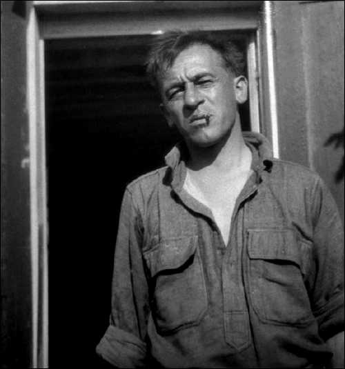
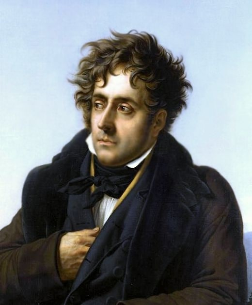
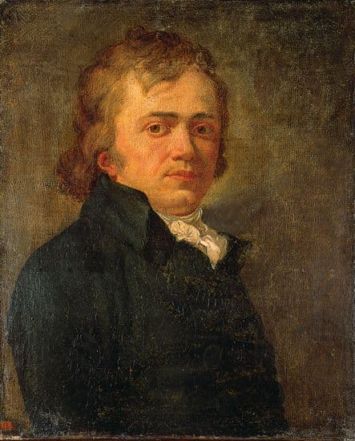

Bienvenue sur notre site dédié à Marseille
Découvrez l'histoire fascinante de Marseille ainsi que ses trésors naturels et culturels à travers nos différentes pages thématiques. Explorez les siècles passés, partez en randonnée à la découverte de paysages époustouflants, détendez-vous sur les plages ensoleillées, explorez les parcs verdoyants, et plongez dans l'art et la culture des musées de la ville.
-
« Marseille est une ville selon mon cœur. C’est aujourd’hui la seule des capitales antiques qui ne vous écrase pas avec les monuments de son passé. Elle a l’air bon enfant et rigolarde. Elle est sale et mal foutue. Mais c’est néanmoins une des villes les plus mystérieuses du monde et des plus difficiles à déchiffrer. » Blaise Cendrars

-

« On sait que Marseille du temps de Cicéron et d’Agricola, était appelée l’Athènes des Gaules. » Chateaubriand
-
« Marseille est une ville… dans son port tout hérissé d’une forêt de mâts, on trouve le Musulman, l’Indien, etc… Marseille est tout l’univers… elle a toujours été florissante. » André de Chénier

-
« Il est de certaines rues qui jouissent à la fois d’une atmosphère qui leur est propre, d’une sorte de renommée universelle et de l’affection particulière des habitants de la ville. La Canebière est une de ces rues. Pour moi, la Canebière était une rue qui menait vers l’inconnu. » Joseph Conrad